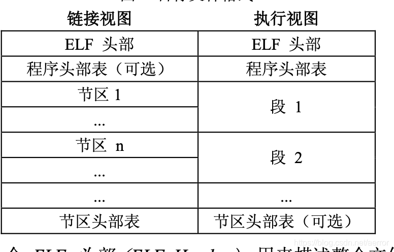
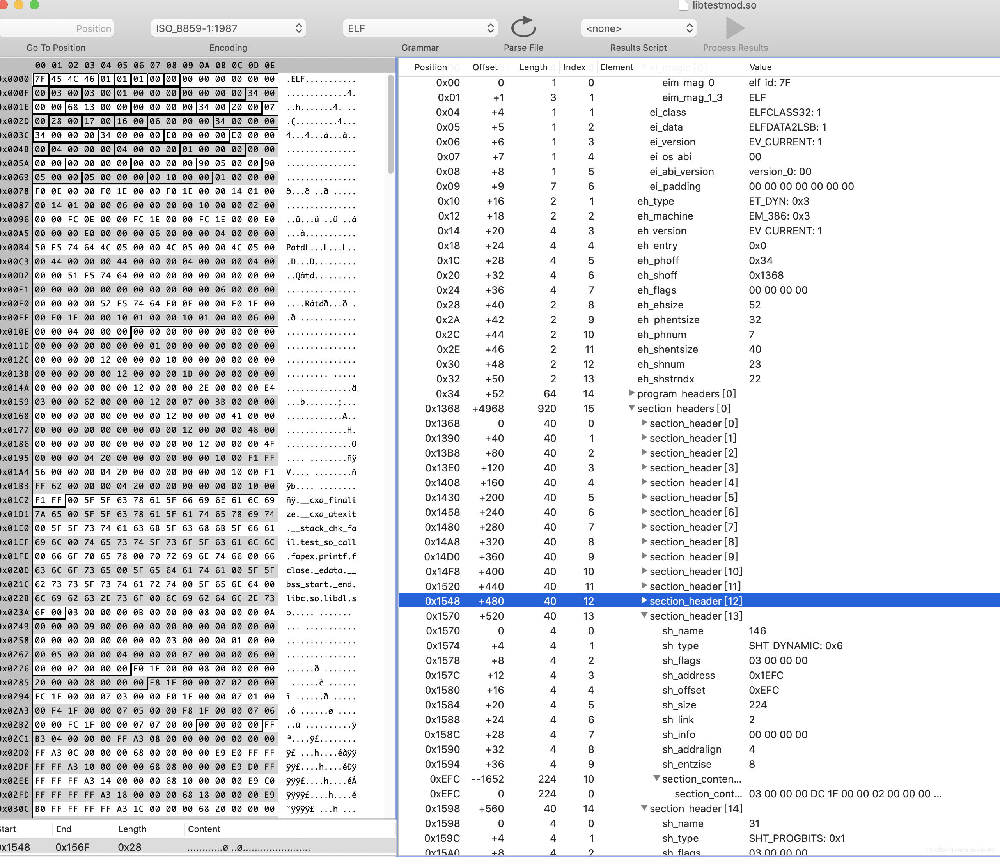
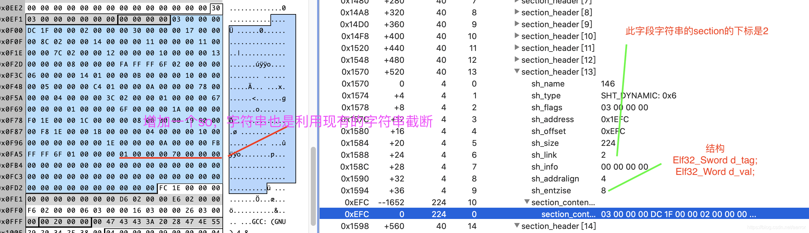
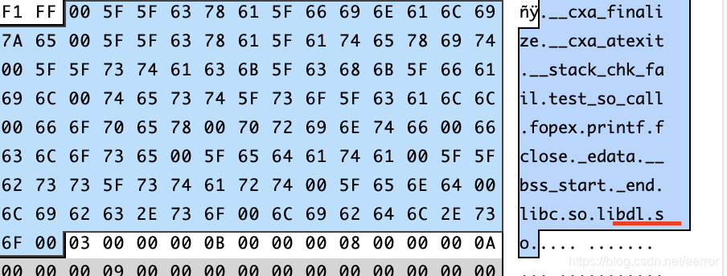
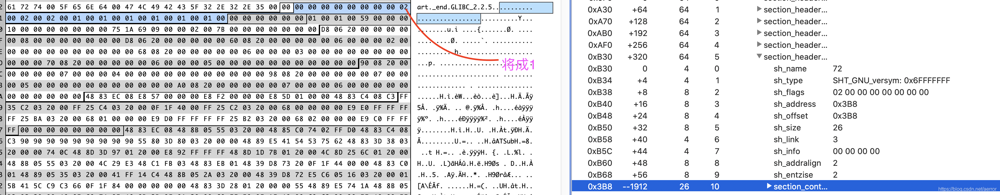

1. 准备工具和环境
1.1 android NDK
1.2 android SDK
1.3 Synalyze It! Pro, 安装ELF语法
1.4 elf文件格式文档.
2. 文件格式是 ELF, 组织如下

实例:

3.我们只需要做以下修改就可以，
3.1 在SHT_DYNAMIC这里增加我们的so，一般来说这个段都有一些对齐的空位，我们不需要增加字节，这样就不重新计算各个偏移了，要不然很多段，这个计算还是比较麻烦的。如下图:

这个一个信息是8个字节，分两个整型吧， 第一个是tag这个查手册有以下字义，第二数的意义根据tag的不同来定义.
你可以使用readelf 来打印这个段出来：
Dynamic section at offset 0xefc contains 24 entries:
Tag Type Name/Value
0x00000003 (PLTGOT) 0x1fdc
0x00000002 (PLTRELSZ) 48 (bytes)
0x00000017 (JMPREL) 0x28c
0x00000014 (PLTREL) REL
0x00000011 (REL) 0x27c
0x00000012 (RELSZ) 16 (bytes)
0x00000013 (RELENT) 8 (bytes)
0x6ffffffa (RELCOUNT) 2
0x00000006 (SYMTAB) 0x114
0x0000000b (SYMENT) 16 (bytes)
0x00000005 (STRTAB) 0x1c4
0x0000000a (STRSZ) 120 (bytes)
0x00000004 (HASH) 0x23c
0x00000001 (NEEDED) Shared library: [libc.so]
0x00000001 (NEEDED) Shared library: [libdl.so]
0x0000001a (FINI_ARRAY) 0x1ef0
0x0000001c (FINI_ARRAYSZ) 8 (bytes)
0x00000019 (INIT_ARRAY) 0x1ef8
0x0000001b (INIT_ARRAYSZ) 4 (bytes)
0x00000010 (SYMBOLIC) 0x0
0x0000001e (FLAGS) SYMBOLIC BIND_NOW
0x6ffffffb (FLAGS_1) Flags: NOW
0x00000001 (NEEDED) Shared library: [ibdl.so] //这个就是我增加的
0x00000000 (NULL) 0x0
可以看到，我在图上增加的修改的数在readelf里，增加了:
0x00000001 (NEEDED) Shared library: [ibdl.so]
01 00 00 00 //表示NEEDED
70 00 00 00 //表示这个动态库名字在strtab中的偏移， (有多个的，这里是, 看图，sh_link是2,所以是下标2那个)，如图划了红线:

3.2 将对应的api的名字修改成我们的，如fopen 改成fopex, 这样的不增加文件内容， 在 解析符号引用时，动态链接程序使用宽度优先算法检查符号表。就是说首先检查可执行程序自身的符号表，然后检查 DT_NEEDED 条目(按顺序) 的符号表，接着在第二级 DT_NEEDED 条目上搜索。共享目标文件必须对进程而言可 读，不需要其他权限。
顺序：
1. in the executable,
2. in the shared libraries specified on the link command line, in order,
3. in the dependencies of the shared libraries specified on the link
command line,
4. in the dlopen()ed shared libraries, in the order in which they were
dlopen()ed.
有一些符号没有版本的，这种的话直接改了就可以了，但有些符号是有版本的，如:
readelf --dyn-syms libtestmod.so
Symbol table '.dynsym' contains 13 entries:
Num: Value Size Type Bind Vis Ndx Name
0: 0000000000000000 0 NOTYPE LOCAL DEFAULT UND
1: 00000000000004a0 0 SECTION LOCAL DEFAULT 9
2: 0000000000000000 0 NOTYPE WEAK DEFAULT UND __gmon_start__
3: 0000000000000000 0 NOTYPE WEAK DEFAULT UND _Jv_RegisterClasses
4: 0000000000000000 0 FUNC GLOBAL DEFAULT UND fopex@GLIBC_2.2.5 (2)
5: 0000000000000000 0 FUNC WEAK DEFAULT UND __cxa_finalize@GLIBC_2.2.5 (2)
6: 0000000000000000 0 FUNC GLOBAL DEFAULT UND fclose@GLIBC_2.2.5 (2)
7: 00000000002008a8 0 NOTYPE GLOBAL DEFAULT ABS _end
8: 0000000000200898 0 NOTYPE GLOBAL DEFAULT ABS _edata
9: 0000000000200898 0 NOTYPE GLOBAL DEFAULT ABS __bss_start
10: 00000000000005cc 52 FUNC GLOBAL DEFAULT 11 test_so_call
11: 00000000000004a0 0 FUNC GLOBAL DEFAULT 9 _init
12: 0000000000000638 0 FUNC GLOBAL DEFAULT 12 _fini
Version symbols section '.gnu.version' contains 13 entries:
Addr: 00000000000003b8 Offset: 0x0003b8 Link: 3 (.dynsym)
000: 0 (*local*) 0 (*local*) 0 (*local*) 0 (*local*)
004: 0 (*local*) 2 (GLIBC_2.2.5) 2 (GLIBC_2.2.5) 1 (*global*)
008: 1 (*global*) 1 (*global*) 1 (*global*) 1 (*global*)
00c: 1 (*global*)
Version needs section '.gnu.version_r' contains 1 entries:
Addr: 0x00000000000003d8 Offset: 0x0003d8 Link: 4 (.dynstr)
000000: Version: 1 File: libc.so.6 Cnt: 1
0x0010: Name: GLIBC_2.2.5 Flags: none Version: 2
Displaying notes found at file offset 0x00000190 with length 0x00000024:
Owner Data size Description
GNU 0x00000014 NT_GNU_BUILD_ID (unique build ID bitstring)
Build ID: b735f8c89e4063c8985931547b23b321de943a22
fopex@GLIBC_2.2.5 (2) , @GLIBC_2.2.5表示这个是version string, (2) 是（这个也是一个标识值，对于在version_info中对比Elf_Internal_Vernaux的vna_other值, 见上面Version needs section, [ none Version: 2]这个信息）， 具体可以看binutils的源代码的readelf.c, 这个是由SHT_GNU_versym段定义的，根据代码，只有外部的重态符号才有这个version strings，
因此SHT_GNU_versym的version的数量是和dynamic sym的数量是一致的，这个的version的数据结构是：
typedef struct {
unsigned char vs_vers[2];
} ATTRIBUTE_PACKED Elf_External_Versym;
0和1两个值是特别意义的，如上面发出来的，0是表示是local， 1表示global, 其它值的话就是在Version needs section中定义的version的值了。
很明显一旦一个符号指定了一个version string的话，其实它就绑到一个so的(needed)了。
所以我们为了 LINKER去我们的hook的so去找这个fopex符号的话，我们必须将这个version的值改成1(global).
否则会这样报错：
/test: relocation error: /lib64/libtestmod.so: symbol fopex, version GLIBC_2.2.5 not defined in file libc.so.6 with link time reference我们做以下修改：

改完之后:
readelf --dyn-syms libtestmod.so
Symbol table '.dynsym' contains 13 entries:
Num: Value Size Type Bind Vis Ndx Name
0: 0000000000000000 0 NOTYPE LOCAL DEFAULT UND
1: 00000000000004a0 0 SECTION LOCAL DEFAULT 9
2: 0000000000000000 0 NOTYPE WEAK DEFAULT UND __gmon_start__
3: 0000000000000000 0 NOTYPE WEAK DEFAULT UND _Jv_RegisterClasses
4: 0000000000000000 0 FUNC GLOBAL DEFAULT UND fopex
5: 0000000000000000 0 FUNC WEAK DEFAULT UND __cxa_finalize@GLIBC_2.2.5 (2)
6: 0000000000000000 0 FUNC GLOBAL DEFAULT UND fclose@GLIBC_2.2.5 (2)
7: 00000000002008a8 0 NOTYPE GLOBAL DEFAULT ABS _end
8: 0000000000200898 0 NOTYPE GLOBAL DEFAULT ABS _edata
9: 0000000000200898 0 NOTYPE GLOBAL DEFAULT ABS __bss_start
10: 00000000000005cc 52 FUNC GLOBAL DEFAULT 11 test_so_call
11: 00000000000004a0 0 FUNC GLOBAL DEFAULT 9 _init
12: 0000000000000638 0 FUNC GLOBAL DEFAULT 12 _fini
这样fopex如果在libc.so里找不到的话，链接程序会加载ibdl.so在ibdl.so里去找这个fopex, 结果找着了，于是我们的hook就成功了。
测试，
环境：
要先设置一个交叉编译的环境，使用以下步骤:
#NDK_ROOT是你安装ndk的目录 。
1. export SYSROOT=$NDK_ROOT/platforms/android-21/arch-x86
2. mkdir toolchain
3. $NDK_ROOT/ools/make-standalone-toolchain.sh --arch=x86 --platform=android-21 --install-dir=tc_androidx86
4. export PATH=$PATH:"$PWD/tc_androidx86/bin"编写编译脚本：
GCC=$PWD/tc_androidx86/bin/i686-linux-android-gcc
$GCC testhook.c -pie -fPIE -shared -o ibdl.so
$GCC testmod.c -pie -fPIE -shared -o libtestmod.so
$GCC test.c -pie -fPIE -L. -ltestmod -o test
代码：
test.c
#include <stdio.h>
#include "test.h"
int main(int argc, char ** argv)
{
test_so_call("test");
return 0;
}testmod.c
#include <stdio.h>
#include "test.h"
void test_so_call(const char *sz)
{
FILE *f = fopen(sz,"rb");
printf("%s %p\n", "adfsaf",f);
if(!f)
fclose(f);
}
testhook.c
#include <stdio.h>
#define EXPORT __attribute__((visibility("default")))
EXPORT FILE *fopex(const char * filename , const char *mode)
{
printf("fopex called\n");
return fopen(filename,mode);
}
执行结果：
adb push libtestmod.so /lib/
adb push ibdl.so /lib/
adb push test /data/local
adb shell chmod +x /lib/libtestmod.so
adb shell chmod +x /lib/ibdl.so
adb shell chmod +x /data/local/tes
$ adb shell /data/local/test
fopex called
adfsaf 0x0
成功！
实际对于apk安装来说，ibdl.so这样的文件不会给正确安装，这样安装之后就会造成ibdl.so加载时缺失，由于libdl.so基本地每个so都是需要的，其实这个声明是多余的，这个so早就给加载了，就算没有给加载，hook的so里也会加载这个so,
其实我们可以，直接把so改成libxy.so, 效果也是一样的。
修改so的脚本：
function removeVersion()
{
#readelf -S "$1" | grep VERSYM
versymOff=`readelf -S "$1" | grep VERSYM | awk '{print $5}' | tr "[:lower:]" "[:upper:]"`
#echo "obase=10;ibase=16;$versymOff"
versymOff=`echo "obase=10;ibase=16;$versymOff" | bc `
#echo "$versymOff"
readelf --dyn-syms $1 | grep -E "fclosx|closx|reax|opex|lstax|stax|fopex|lseex|freax|fwritx|writx|accesx|flocx|lseek6x|fstax" | awk '{print "index="$1"; symbol="$8";"}' | tr -d ":@LIBC" | while read line; do
eval "$line"
#echo "$index * 2 + $versymOff "
offme=`echo "$index * 2 + $versymOff" | bc`
echo "$offme"
done | xargs replver $1 $2
}
for cc in Development Release ; do
arrUnityPatchSearch=("fopen" "open" "fread" "read" "fwrite" "write" "lseek" "lseek64" "flock" "fclose" "close" "access" "lstat" "stat" "fstat" "libdl.so" );
mydir=`pwd`
for patchArch in armeabi-v7a arm64-v8a x86 ; do
cd il2cpp/${cc}/Libs/$patchArch
hexstr=`xxd -p libu.so | tr -d '\n'`
for fn in ${arrUnityPatchSearch[*]} ; do
pat=`echo -n "$fn" | xxd -p`
if [ "libdl.so" == "$fn" ]; then
rel=`echo -n "libhs.so" | xxd -p`
else
rel=`echo -n "${fn%?}x" | xxd -p`
fi
pat="00${pat}00"
rel="00${rel}00"
hexstr=`echo "$hexstr" | sed "s/${pat}/${rel}/g" `
done
echo "$hexstr" | xxd -r -p > libu2.so
echo "il2cpp/${cc}/Libs/$patchArch"
removeVersion libu2.so libu3.so
cd "$mydir"
done
done去掉LIBC的程序：
#include <stdio.h>
int main(int argc, char **argv)
{
if(argc < 4)
return -1;
FILE *f = fopen(argv[1],"rb");
if(f)
{
fseek(f,0,SEEK_END);
int num = ftell(f);
printf("file size is %d\n",num);
char *szc = malloc(num);
fseek(f,0,SEEK_SET);
fread(szc,num,1,f);
fclose(f);
for(int i=3;i<argc;i++)
{
int offset = atoi(argv[i]);
printf("offset is %d\n",offset);
szc[offset] = 0;
szc[offset+1] = 0;
}
remove(argv[2]);
f = fopen(argv[2],"wb");
if(f)
{
fwrite(szc,num,f);
fclose(f);
}
else
{
printf("open target file failed %s\n",argv[2]);
}
free(szc);
}
return 0;
}